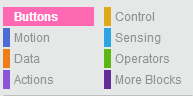

Getting Started
Creating a program
The different tabs represent different types of blocks which can be seen when you click on the tabs.
If you click on Motion for example, you will see blocks that can make the robot move,
such as forward, backward and turn.
To create a program, you simply click on a block and drag it to the workspace, where you then drop it.

Usually you will begin with a When clicked block. This will mark the beginning of your program and tell the PedaGogo when to start executing your program, which means it will start to do the things your program tells it to when you click on the button with the same colour. There are three buttons to chose from; green, blue and yellow.

You may have seen that there is also a red button on the PedaGogo, this button will be explained later on.
You can tell by the shapes of the blocks how they fit together.

Loops
Kort introduktion till loopar!!
To change the values in the blocks, double click on them and type in a new value!

Uploading your program to PedaGogo
You will need a flashdrive with USB blablablablabladibla red button bladibladiblaa.
Motion
Practise makes perfect!Direction and Speed
The speed can be changed by changing the values in the speed blocks. Changing the value by 1 means.. Blablabla. Max speed is.. Min speed is.. jadajadajada!

To tell the robot to make a turn, you use the turn blocks to turn either left or right. You can decide how many degrees the robot should turn by changing the value in the blocks. Here are some values of degrees you could use.

Below are some examples of how the robot turns depending on the degree-value

If you need the robot to turn around at a specific angle, like when you want it to move in a triangle, remember to calculate the correct angle for the turn-block as follows:

You can practise your skillzzz by completing the following tasks! Enjoooy!
Task 1: Speed
1. Try changing the speeds from the minimum speed to the maximum by using the increase speed block, use different values in the block to see the difference.
2. Try using a loop to gradually increase the speed up to the maximum speed, then use another loop to decrease the speed down to the minimum speed.
Task 2
Task 3
Task 4
Task 5
Task 6
Lights
Practise makes perfect!Snacka om lamporna, vad roligt sååå roligt, man kan han med dom!!
You can practise your skillzzz by completing the following tasks! Enjoooy!